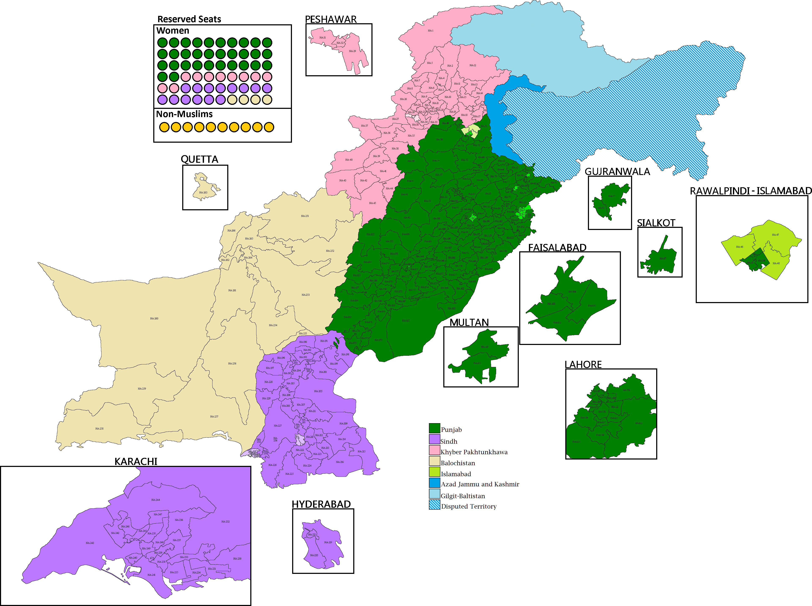

"In this project, the goal is to develop precise prediction models for forecasting future election results in Pakistan. The focus is on collecting a robust dataset, performing EDA, and applying machine learning algorithms to accurately predict winning parties, empowering stakeholders to make informed decisions and strategic plans.".

"In this project, I delivered precise predictions for COVID-19 recovered cases using EDA, Logistic Regression, and various Cross Validation techniques, ensuring accuracy through HoldOut, K-Fold, Stratified K-Fold, LOOCV, and Repeated Random Test-Train Splits."
"In this Project I delivered PharmaClassifier utilizing machine learning algorithms to intelligently categorize drugs based on their properties. This project employs advanced data analysis and predictive modeling, contributing to accurate drug classification for enhanced medical decision-making and treatment planning."
Discover my Projects showcasing Excel mastery. From dynamic Revenue Dashboards to expert Profit transformations, I specialize in unlocking data's full potential. My core strength lies in crafting meaningful insights through precise data transformation, making Microsoft Excel the powerhouse for insightful analysis."
.
"This encapsulates my entire Power BI dashboards."
Experience the transformative capabilities of Microsoft Power BI in 'Harnessing the Power of Data with Power BI.' From strategic data extraction and transformation to Power Query optimization, witness the creation of dynamic dashboards that convert raw data into actionable insights."